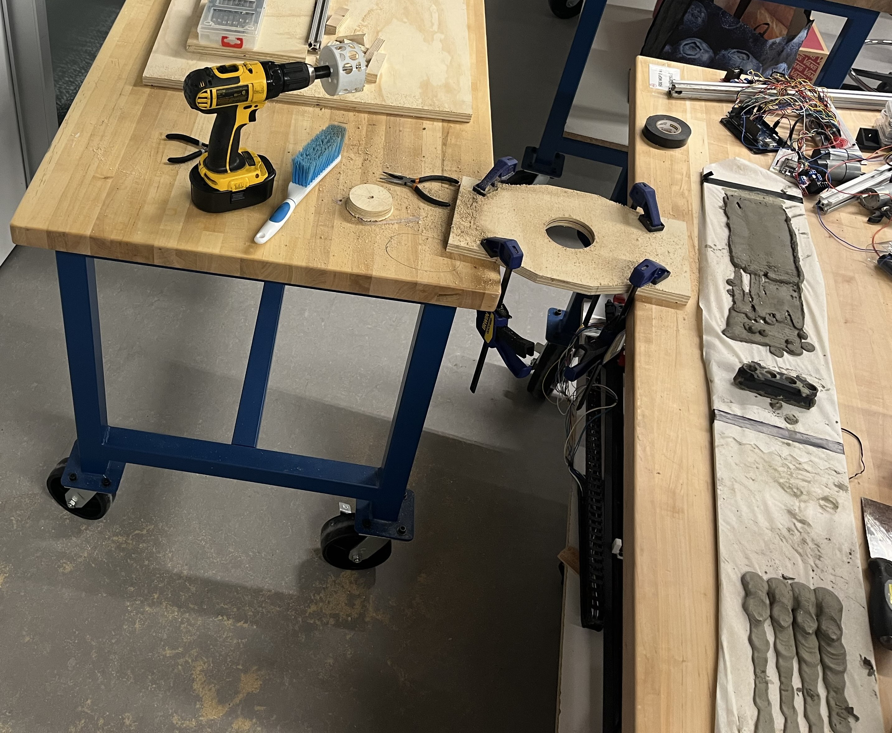

Major Qualifying Project | PRIMO - Mobile Construction 3D-Printer
The Major Qualifying Project (MQP) is part of WPI's graduation requirements. This project is major specific and students select which project they'd like to complete. My project involved creating the initial prototype of a mobile robot for construction 3D-printing. Advised by Professor Mahdi Agheli, we participated in the SICK $10k Challenge (where we earned second place) and the MassRobotics Form and Function Challenge. The week after school ended, a teammate and I displayed our robot at Automate 2025 as part of a WPI cohort. Part of the project is developing a report summarizing everything, which gets published in WPI's database (our project report, currently under embargo). We are also working to write a journal paper for ASME JMR and previously filed for a provisional patent on the concept as we evaluate our options to complete a standard patent in the future.
The Process

Over the course of Senior year, my three teammates, a grad student, and I worked to bring this robot to life. In A-term, we created a simple gantry system as a testbed for nozzle development. We ended up bringing this system to the Manufacturing Mashup in October along with other WPI projects. From there, we continued testing different types of pumps and nozzles on increasingly viscous materials. Eventually, we settled on a screw pump design because it allowed for continuous filling of the material reservoirs while producing enough force to extrude wet cement. During the same time, we worked on testing a simple chassis. After validating motor choices, I made a completely wooden prototype over winter break that we used to ensure strength before trading out some parts for 3D-prints to improve tolerances and minimize the robot's form factor.
The Result

In the end, the robot achieved the goals we set at the beginning of the year. It can print straight layers of any length and drive atop previously printed layers to build a wall of any height. ESPNow provides wireless communication without needing a WiFi connection. Onboard the robot, this ESP32 communicates with a Raspberry Pi and Arduino Mega to control the whole robot. The entire project budget was $1000, which we were able to stretch by using available components from the robotics labs and various competitions, namely the SICK $10k Challenge where we were provided a Multiscan100 LiDAR to use in our project. I was primarily responsible for the drivetrain and turntable mechanism as well as the programming, apart from the LiDAR data processing. The immediate next steps for the project will answer questions about material resupply and improve autonomy.
A short demo video I created for WPI's Undergraduate Research Project Showcase.